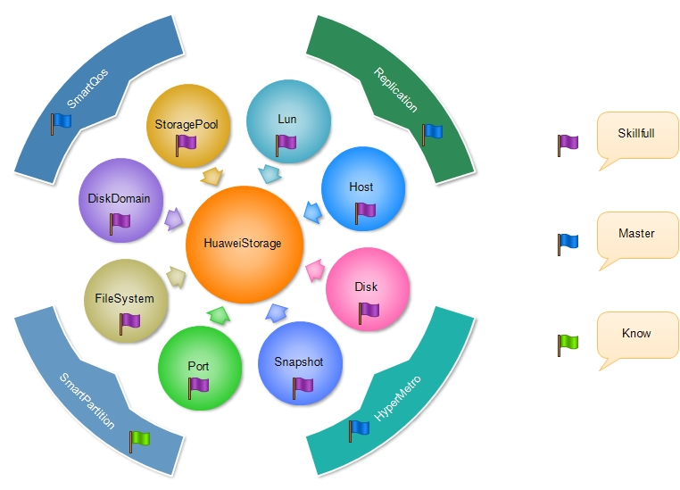
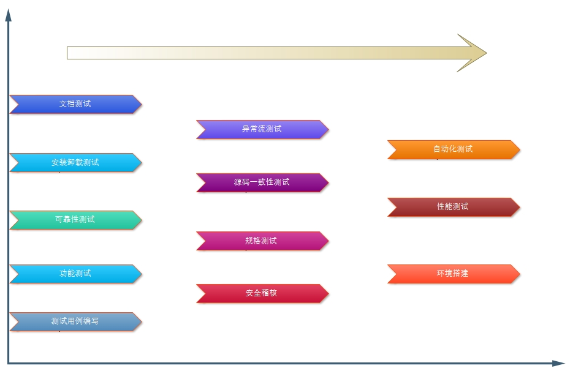
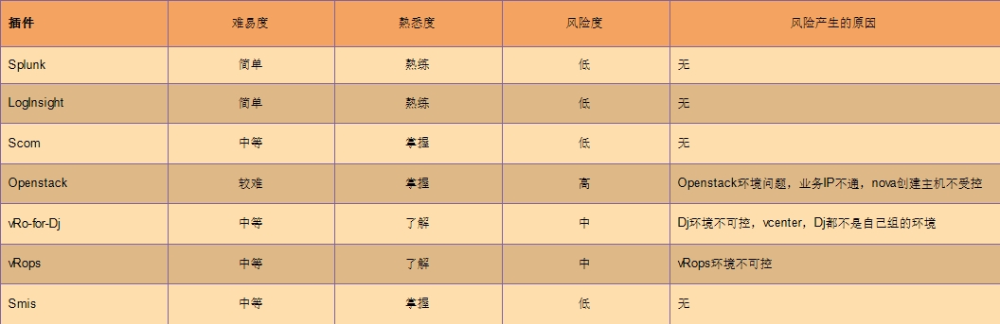

存储业务知识的了解
在这三个月的工作当中，我对我们小组所做的业务有一定的了解，主要是对存储知识的了解，刚来公司的第一周就看了有关存储的一些文档，一直到后来对各个插件的测试活动中更深入的了解到存储阵列业务知识，以下是我对这几个月来所了解的存储知识业务的总结以及自己掌握的程度。
测试技能的提升
在实际工作中测试技能的提升非常快，因为工作中会遇到各种各样的难题，让你无法逃避，此时你就会想尽一切办法去解决。在解决问题的过程中你的专业技能的提升非常明显，虽然这个过程有时候会很痛苦。在这三个月的工作中，我原有的测试技能得到增强，也学会了不少新的技能。
目前负责插件情况
目前负责了几款插件的测试工作，较为熟练的插件有Splunk，LogInsight，Scom，Openstack。未开展过测试的插件有vRo-for-Dj，vRops，Smis，经过对以上插件的评估，作出如下总结。
试用期总结
在这三个月的工作当中，我收获了很多，包括知识技能，团队合作，处事能力。也发现了自身的很多缺点，需要及时的改正，希望在以后的工作中得到改善。
收获
- 互助友爱的一帮同事
- 测试技能的提升
- 测试流程体系得到完善
- 学习到以前没接触到的知识
- 办事效率质量有所提高
给自己的建议
- 合理的利用时间
- 加强专业技能，强化自己薄弱的领域
- 发掘新的技能
- 增加编码能力

给团队的建议
感谢各位同事对我这个新人的指导与培养，在这个团队当中工作我感觉到非常的和谐与开心，在与大家一起共事的三个月中，我的直观感受是轻松，愉快。同时我在这里给团队一点小小的建议。
- 各个插件最好要有自己搭建的测试环境，一方面是对环境的熟悉，另一方面提高测试效率，避免因环境问题测试受阻
- 测试用例的维护要做起来，测试用例的质量一定程度上决定了测试的效率和质量
- 开展一些其他专项测试的学习，比如自动化测试。
未来工作计划
未来我的工作计划是在完成基本的测试任务之余，提升一下专项测试，提升自己的编码能力，合理的利用自己的时间，真正达到测试开发工程师的水平。具体提升技能如下：
- 提升自动化测试能力，分担团队自动化测试任务
- 提升环境搭建能力，特别是需要组网环境
- 提升性能测试能力，学习一些性能测试工具
- 提升存储底层业务知识，熟悉其原理